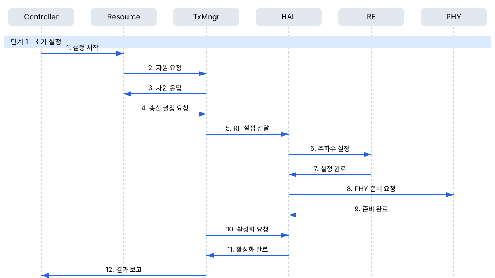

WORK / DEMO-MSC-001
분석 문서에서 MSC까지
분석 내용을 읽고, 미리보기로 흐름을 살펴본 뒤 HTML 뷰어에서 MSC를 크게 보는 예시예요.
공개 가상 샘플 · 실제 업무 코드·로그·상세 분석 자료를 사용하지 않았어요. 업무용 Workspace의 실제 폴더나 실행 결과를 복제한 화면이 아니에요.
설정 요청과 결과 회수 흐름
요청·자원 준비·설정 전달·완료 회수의 형태를 보여주는 학습용 그림이에요. 모든 메시지는 기존 B안 공개 가상 예시에서 가져왔어요.
MSC 미리보기 · 1단계 / 메시지 1–12전체 36개 메시지는 확대 뷰어에서 확인 →

분석 요약
- 시작과 종료설정 시작에서 결과 보고까지를 가상 메시지로 연결한 예시예요.
- 단계별 설명초기 설정 / 설정 변경 / 해제 후 재설정의 3단계를 뷰어에서 이동할 수 있어요. 후반 두 단계는 비교용 반복이에요.
- 근거와 미확인근거는 기존 공개 B안 시안이에요. 소스 코드·런타임 로그·실제 제품 동작을 검증한 분석은 아니에요.
Work에 함께 남기는 자료
| 자료 | 바로가기 |
|---|---|
| Work 요약 | README |
| 분석 문서 | CODE_FACTS.md |
| 문서 안내 | 문서안내.md |
| 전체 MSC 그림 | SVG 원본 |
| MSC 텍스트 | 텍스트 원본 |